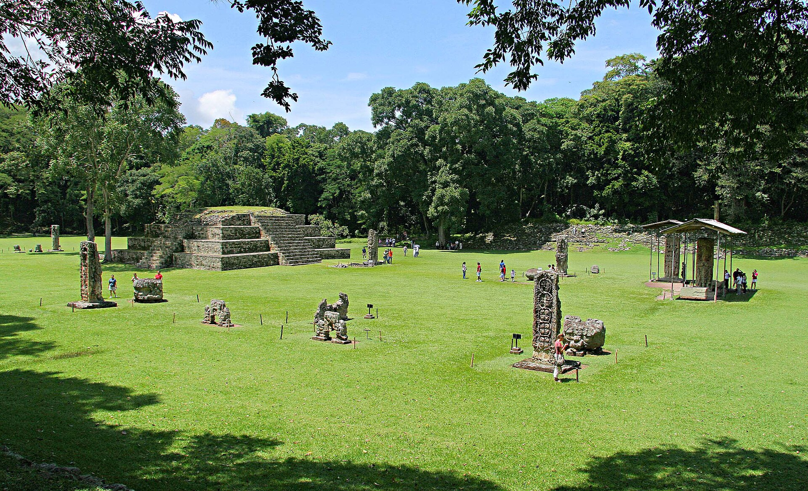

Turismo

Bahia de Honduras
El territorio de la actual Honduras fue descubierto en el cuarto viaje de Cristóbal Colón entre 1502 y 1503, en ese tiempo era llamada Guaymuras o Hibueras por los indígenas locales, fue seguido de la conquista de los habitantes y posteriormente de la exploración de las tierras, que lleva consigo la de realizar tanto mapas geográficos, como cartas costeras y de navegación.
Ruinas de Honduras
Copán es un sitio arqueológico de la antigua civilización maya ubicado en el departamento de Copán al occidente de Honduras. En 1980 la UNESCO declaró a Copán como patrimonio de la humanidad.4 A Copán se le considera como el París del mundo maya, además son las ruinas mayas en mejor estado del mundo maya.